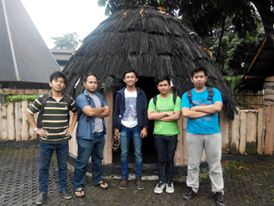
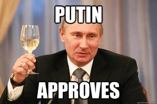

Obama dan Pesan Terakhir di Pidato Perpisahannya |
|
|---|---|
Admin Galak |
Barack Obama menyampaikan pidato perpisahan terkahir sebagai presiden Amerika untuk terakhir kalinya pada Senin malam di McCormick Place di Chicago, Illinois (10/1). Seperti yang diketahui, Presiden Baru Amerika Serikat Donald Trump akan dilantik pada tanggal 20 Januari mendatang. Perjalanan Obama ke Chicago juga merupakan yang terakhir sebagai presiden, dan yang ke 445 kali dengan menggunakan pesawat kepresidenan Air Force One. Selama delapan tahun lamanya, Presiden Barack Obama telah berhasil memimpin Amerika Serikat menjadi negara yang semakin baik. Keberhasilan Obama tidak lepas dari dukungan masyarakat AS dan keluarganya, termasuk sang istri, Michelle Obama yang selalu setia mendampinginya selama menjalani masa pemerintahan. 
|

Morinaga Chil Kid Lover |
Nice thread !!!  |